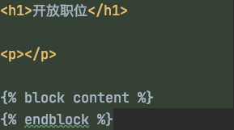
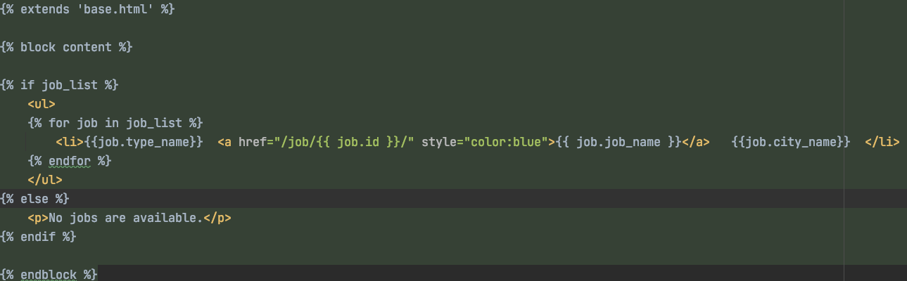
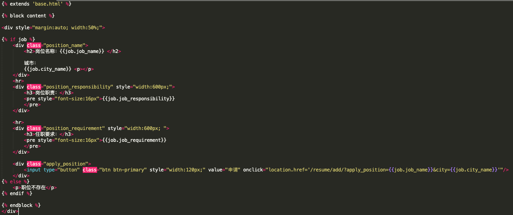

Django自定义页面编写
在QuickStart中，我们已经利用Django Admin几乎零成本的实现了Django的后台管理页面。
但是，在真实的业务场景中，我们并不能让所有的用户都登录到后台管理页面进行操作，例如对于候选人而言，如果想要投递简历，那么登录到后台管理页面并不是一个推荐的方式。
因此，接下来，我们需要了解在Django中如何实现自定义页面的编写。
前端概述
对于一个Django项目而言，其自定义页面的编写大致可以分为两种方式: 前后端分离 与 Template页面渲染。
- 前后端分离方式是指前后端完全解耦，前端使用纯前端框架进行开发，例如React, VUE以及javascript等技术技术编写，后端通过接口提供前端页面需要的数据，前后端通过HTTP / websocket等通信协议进行交互。
- Template页面渲染是一种相对古老的方法，它本质上一种前后端耦合的方式，即在后台项目中定义前端页面的html模板，并在后端项目中动作替换模板中项目的内容，从而生成Web页面可预览的html文件。
相比较而言:
- 对于纯后台开发人员而言，Template页面渲染的开发方式相对简单，不需要过多的了解JS以及前端框架等各种技术，就可以快速实现相关的功能。
- 但是，由于Template页面渲染是通过html页面渲染的方式进行页面编写，无法利用JS强大的生态圈，导致页面效果通常会较差。同时由于前后端全部耦合，对于开发而言也不容易拆分和合作开发。
因此，目前前后端分离方式已经基本成为了所有项目开发的标准方式，Template页面渲染正在逐步被淘汰。
但由于前后端分离方式对前端技术有一定要求，我并不会在本文中展开，而是仍然简单了解一些Template页面渲染的开发方式，让你能够实现一些基本页面的编写。
Ps: 在后续文章中，我们会讲解对于前后端分离方式的项目，Django应该如何提供后端接口，同时，也会在专门的系列文章中，分享如何快速进行前端开发。
Django自定义模板概述
我们先来了解一下Django自定义模板的基本原理：
- Django模板中包含了输出html页面中的静态部分的内容。
- 模块里面的动态内容会在运行的过程中被动态的替换。
- 在views中指定每个URL使用哪个模板来进行数据渲染，并传入用户替换动态内容的数据。
Django的自定义模板的一大特性是支持继承，具体来说：
- Django中允许定义一个骨架模板，在骨架模板中可以包含站点的公共元素，例如头部导航、菜单栏、尾部链接等。
- 同时，骨架模板中还可以定义Block块，这些Block块可以在继承的页面中实现覆盖。
- 每个页面都可以选择继承自其他页面。
自定义职位列表页面编写
下面，我们将会继续QuickStart中的职位管理系统的开发，分别编写适用于匿名用户浏览的职位列表和职位详情页面。
我们先来看职位列表页面的开发。
第一步: 在jobs目录下创建一个templates目录。
mkdir jobs/templates
第二步：定义一个匿名访问的基础页面base.html，并在基础页面中定义页头：

Ps: 在上述base页面中，我们定义了页面的标题和一个block块，此外，对于每个block块都需要一个endblock来表示结束。
第三步：下面，我们就可以正式开始编写我们的职位列表页面的内容了: joblist.html。

下面，我们来了解一下上述代码的含义:
extends 'base.html'表示当前文件继承自base.html文件。- 下面的所有内容都是对
block content块进行的重写。 - 在Django的template渲染中大括号百分号内部可以包含python表达式，Template渲染时会自动解析。
第四步：view层中添加url对应页面。
在上面的内容中，我们已经定义了职位详情列表页面的样式和内容了，接下来，我们需要定义如何能访问到职位详情页面。
如果你还记得在本系列文章的开头中我们分享的Django架构图，那你应该就会知道Django中的入口应该是view层。
因此，我们需要在view层中添加url并映射到我们刚才编写的页面。
修改jobs/views.py文件如下：
from django.template import loader
from django.http import HttpResponse
from jobs.models import Job
from jobs.models import Cities, JobTypes
def joblist(request):
job_list = Job.objects.order_by('job_type')
template = loader.get_template("joblist.html")
context = {'job_list': job_list}
for job in job_list:
job.city_name = Cities[job.job_city][1]
job.type_name = JobTypes[job.job_type][1]
return HttpResponse(template.render(context))
第五步：url注册
view视图编写完成后，还有重要的一步，将上述定义的view视图注册到url中。
创建jobs/urls.py文件，编写内容如下：
from django.conf.urls import url
from jobs import views
urlpatterns = [
# 职位列表
url(r"^joblist/", views.joblist, name="joblist"),
]
除了在应用中注册url外，我们还需要在整个项目中的urls中添加当前应用的urls注册信息，具体来说，修改项目目录下的urls.py文件：
from django.conf.urls import url, include
urlpatterns = [
# 注册jobs应用
url(r"^*", include("jobs.urls")),
]
到此为止，职位列表页面的定制开发就已经基本完成了。
自定义匿名用户可以查看的职位详情
接下来，我们需要做的是职位详情页面的定制开发。
第一步：创建job.html详情页模板：

模板渲染原理基本与之前的职位列表页面相同，此处不再赘述。
第二步：编写职位详情的views视图逻辑：
from django.http import Http404
from django.shortcuts import render
from jobs.models import Job
from jobs.models import Cities
def detail(request, job_id): # view函数直接接收了job_id参数
try:
job = Job.objects.get(pk=job_id)
job.city_name = Cities[job.job_city][1]
logger.info('job retrieved from db :%s' % job_id)
except Job.DoesNotExist:
raise Http404("Job does not exist")
return render(request, 'job.html', {'job': job})
第三步：url注册：
from django.urls import path
from jobs import views
urlpatterns = [
path('job/<int:job_id>/', views.detail, name='detail'), # url中接收参数
]
到此为止，职位详情页面就已经也开发完成了。